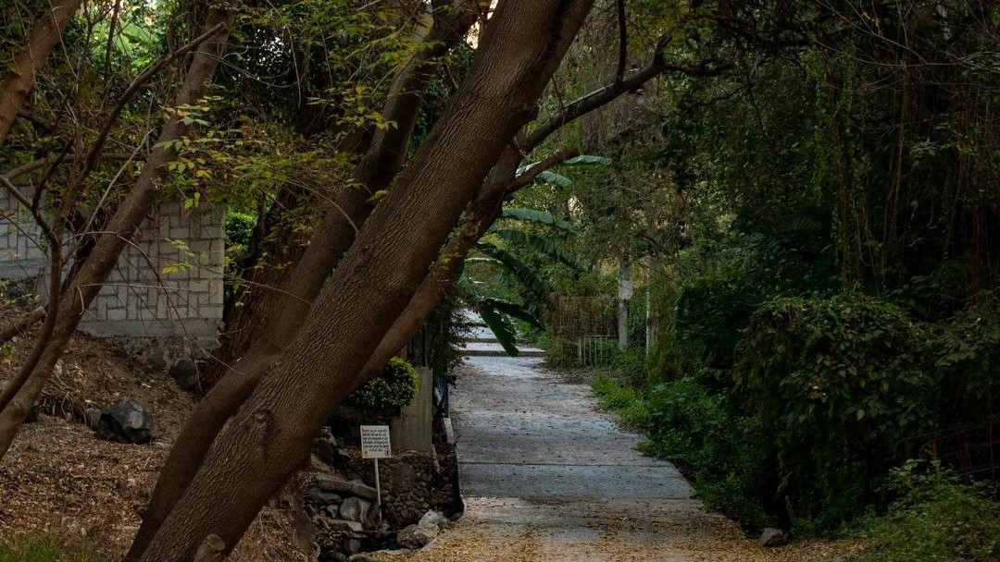
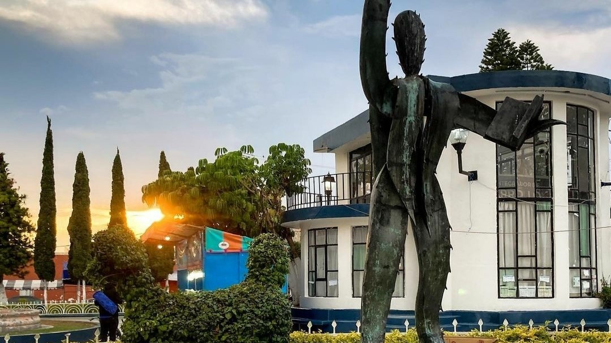
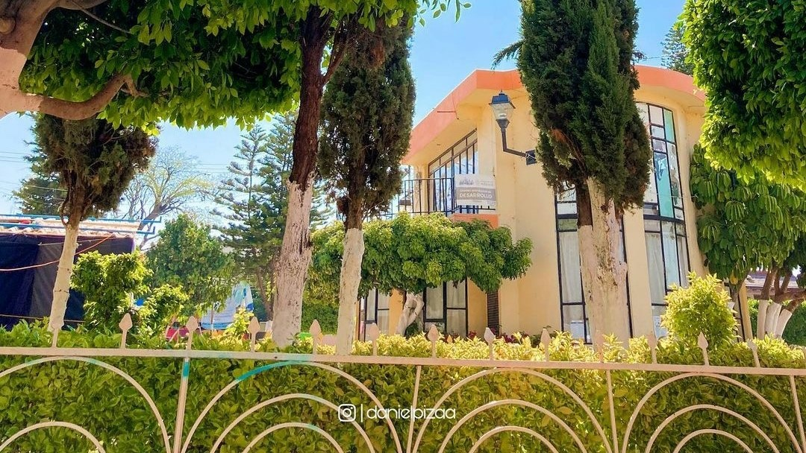
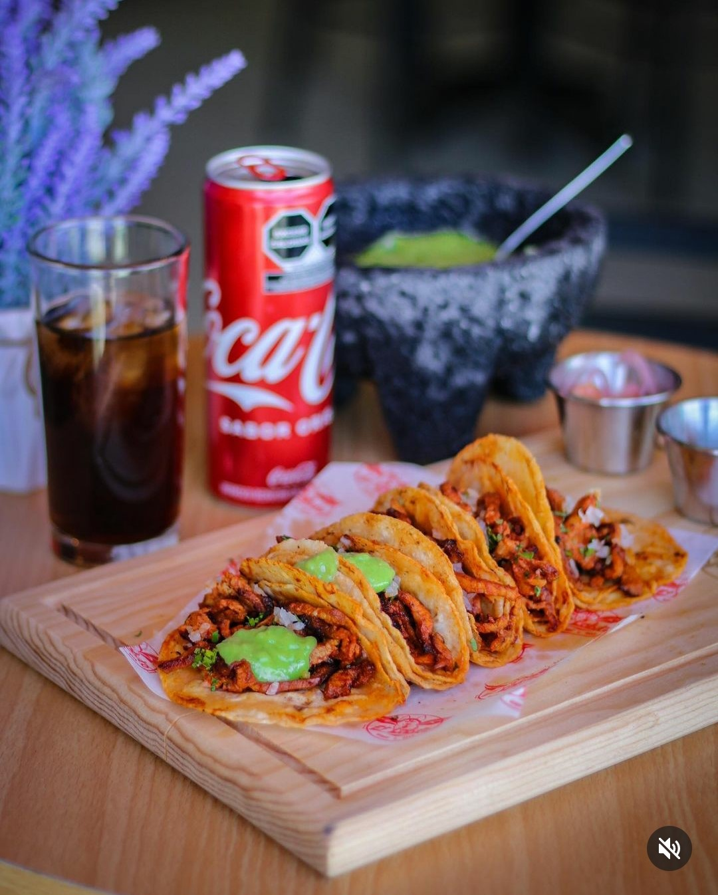
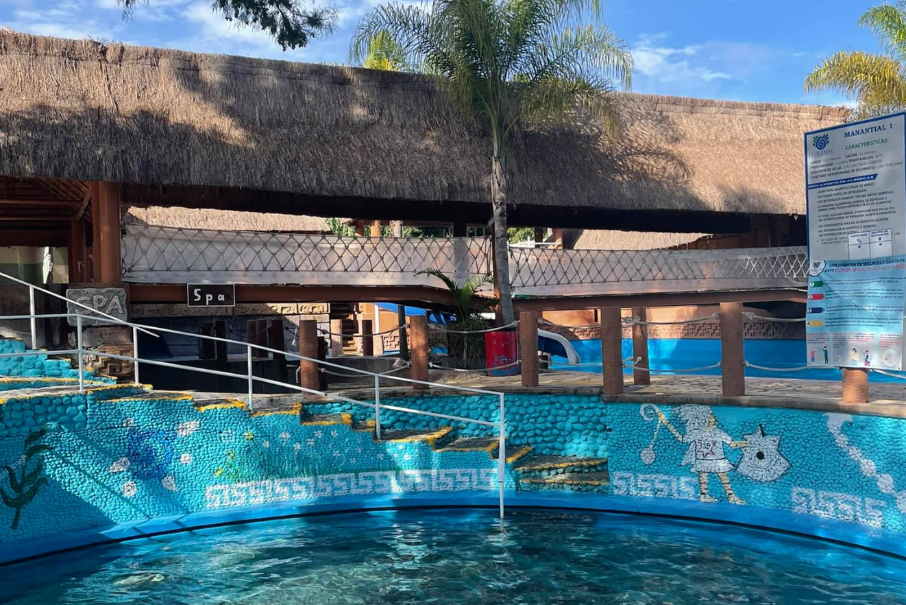
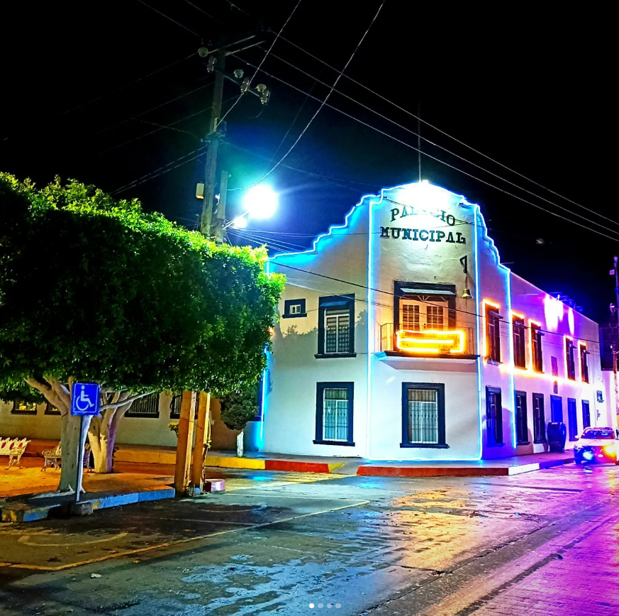

TurInsta
Inicio
Ranking
Lugares
Contacto



TurInsta
Captura momentos inolvidables
La mejor aplicación movil para conocer cada rincón de nuestro municipio.
Descarga TurInsta Aquí
Que ver en Tezontepec...

Gastronomía
Fotografía y Vistas
Cultura
Más Información
En nuestra aplicación movil tambien puedes encontrar información referente a:

¿Qué lugares visitar?
Eventos
¿Cómo llegar?

Servicios